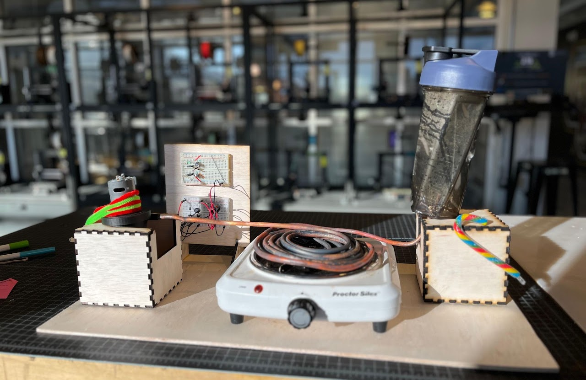
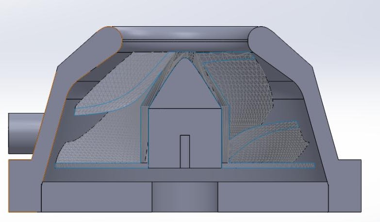
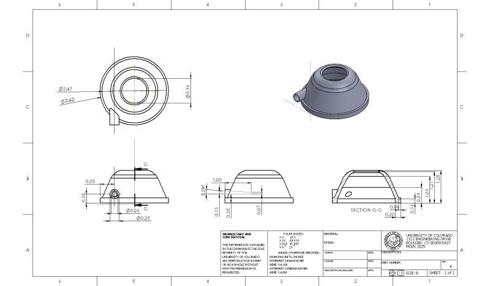
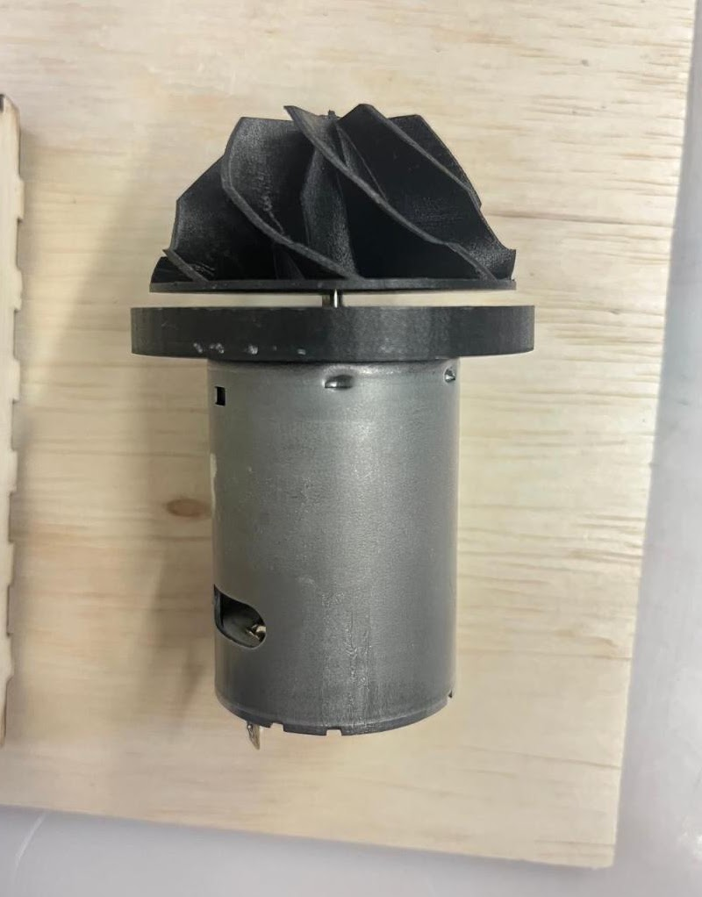

Steam Engine — GEEN 3852 Thermodynamics
The challenge: generate electrical work from wasted energy, on a $50 budget, in four weeks. My team of four decided to harness the waste heat from a stove, turn it into steam, and use that steam to make electricity.
My Role
I led CAD design and testing. We started with a water-turbine-inspired rotor and planned to 3D print it in PLA, but PLA's low deformation temperature (60°C) ruled it out fast. Machining a metal rotor wasn't realistic in our timeframe, so we pivoted to a Markforged printer running nylon-carbon fiber filament (deformation temp 143°C) for the durability we needed. On a $50 budget, every design change still meant a cheap PLA prototype first, which is how we ended up going through 14 iterations before the final rotor.
Testing
This was the fun part. We heated water, ran it through a copper coil sitting on the stove, and directed the resulting steam straight at our turbine. A teammate and I measured the temperature differences before, during, and after the coil to estimate how much work the turbine could produce.
What Went Wrong, and What I Learned
Despite everything, the turbine never generated electricity, and the reasons were instructive. Our generator demanded high torque, which capped the efficiency of our whole design; a lower-torque generator would likely have changed the outcome. On top of that, the project landed right in the middle of midterms and finals, and our communication and time management suffered for it.
- Nail down clear design requirements from day one.
- Don't design your entire system around a single component (our generator) or that component becomes your ceiling.
- Better planning and communication keep every teammate contributing, and that's what actually drives a good outcome.
Gallery



